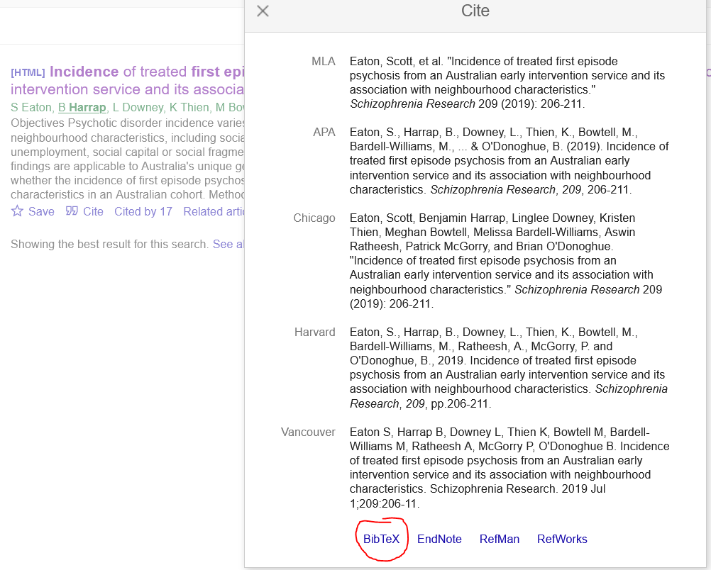
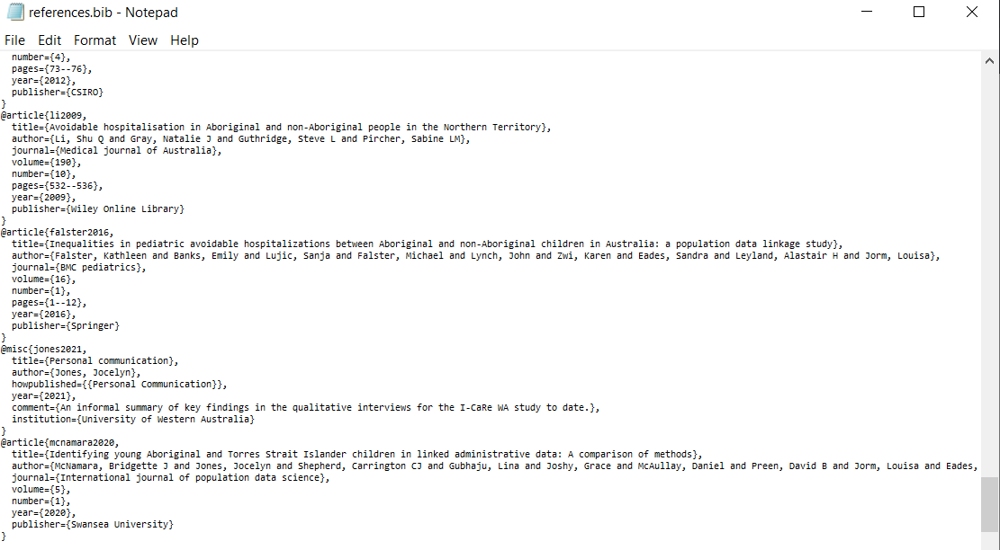

| Style | Price | Rating |
|---|---|---|
| Wild Ale | 5.50 | 3.0 |
| Double Neipa | 9.00 | 2.0 |
| American Ipa | 10.00 | 2.0 |
| Brown Ale | 13.44 | 3.3 |
| Belgian Tripel | 5.00 | 1.0 |
RMarkdown is great
research
code
R
The title says it all really. RMarkdown, along with bookdown, has made my life so much easier when it comes to writing up papers and reports. If you’re a non-R user I hope this blog post convinces you to ditch other word processing software and make the jump to RMarkdown. It’s free!
This post was borne out of a tweet about using RMarkdown that seemed to be well received, and someone asked if there was a tutorial. There probably is already, but I figured I would write my own mini-guide on the things I do that make writing so much easier in RMarkdown. This isn’t going to be comprehensive but hopefully it gives you enough of an idea that if you run into trouble you can google your way out of it.
Before we get into why writing reports using RMarkdown is a no-brainer I want to preface that I am absolutely not an expert in R or RMarkdown and it’s quite possible there are smarter/cleaner/more efficient ways of doing everything here. What I will show you though is all the things that I think are really swell.
I write all my documents and knit to PDF, so all my advice is based around this setup. No idea if it works the same if you knit to other formats. Also, there is some degree of assumed knowledge in this post, for example you know what it means to knit a document or what a code chunk is. If you’re unsure about what something means you can google it - this is how I learned most of my knowledge. If you are really stuck you can always send me a tweet. I can’t promise I can help but it’s possible.
One final caveat - I’m a Windows user. All this stuff is probably functionally the same on Mac but I couldn’t tell you so you might need to translate my Windows instructions into Mac. If you’re a linux user… Well you probably know how to do all of this anyway, or at the very least you’re a sucker for software punishment so will have no qualms googling your own problems.
Ok, time to get into the good stuff.
Stuff that made my life easier
Folder structure
This section isn’t required by the way, but starting out with a coherent and organised folder structure is nice. My brief stint in web development taught me a lot about directory structure, which is why I do things this way. It might not be super necessary but having a consistent way of organising things makes it easier to find what you’re looking for when you come back to a project after a year. There are plenty of resources out there on good folder structures, so I won’t spend too long here. Below is a toy example of what a nicely organised project folder might look like:
2022-02-10-chapter-3
- code
analysis.R
cleaning.R
- data
- raw-data
original_data.csv
clean-data.csv
- img
histogram.pdf
survival-curve.pdf
- meetings
2022-02-10.txt
- tab
summary-stats.csv
interactions.csv
chapter-3.Rproj
citation.csl
references.bib
writeup.Rmd
writeup.pdfI have separate folders for my code, data, images, meeting notes, and tables. Then in the main directory I have the R project file, my references, and my RMarkdown file with the write up in it. I do often end up with other random files in the folder that I don’t have a home for and that’s fine, but at least most things have a home. This is what works for me, if it doesn’t work for you, you do you.
I always start each project by making a new folder where I’m planning to keep everything and name it using the convention “yyyy-mm-dd-project-name”. The date being the date on which I created the folder, and doing so means alphanumerically sorting the folders also sorts them chronologically. Nice!
Workflow
This section is where the basis for the magic begins. Getting this right is critical to automating the numbers, tables, and figures in your write up.
I try my best to split my code up into different .R files depending on what I’m doing, with each subsequent file starting off with the data produced at the end of the previous file. This means if you need to edit something during the cleaning phase you can do so, and as long as you haven’t done anything drastic, your changes shouldn’t break anything downstream. The order I tend to follow in my code is:
- Getting the data together
For my thesis I work with multiple linked datasets, each contained in their own .csv file. For an analysis I might need to use information from births data, deaths data, and child protection data. So the first thing I do is get all my data together. This usually just means running a bunch of read_csv() commands to get all the datasets in that I need.
- Cleaning the data
Next I look through each dataset and make sure it contains what I think it should, doesn’t contain any nonsensical values (e.g. negative ages), and fix any errors that I come across. For me, cleaning the data means only working with the existing variables and values in the dataset, distinct from making new variables which I do in the next section.
- Preparing the data
I suppose ‘preparing’ the data is just another type of cleaning, but I like to call them different things because it helps separate out the two processes. By preparing data I mean creating new variables or datasets based on the result of the cleaning stage. This could be performing a bunch of joins, reshaping your data from wide to long, making composite variables. The goal of this section is to end up with the variables and datasets that you need for your analysis.
- Analysing the data
This is arguably the exciting section, where you get to fit your models, plot your graphs, create your summary tables. Anything that you plan to include in the write up of your analysis should be saved as a distinct file. This means any tables or figures should be saved in the folders you made for them (see @Folder Structure). By doing this you don’t have to re-run the entirety of your code when you come back to work on your write up.
- Writing up
Ideally all your analysis is done and all you need to do is write up the results. Assuming each of the previous stages has gone well, the tips in the next few sections should make writing up a little less painful.
Easy citations
Have you been terrorized by EndNote? Is Mendeley telling you the MS Word addin is not installed even though you’ve installed it three times? Has Zotero … well I don’t know anything about Zotero but every software has its bugs. Anyway, ditch the citation management software, we’re doing hipster references now. (Note: you don’t have to ditch your reference management software, see my final comment in this section)
The end goal of using RMarkdown (or is it bookdown? I don’t know) for citations is to reduce the burden of keeping track of your in-text references, adding them to the bibliography, and getting the formatting of your references correct. All you need to do is keep your references file up to date.
So to start, you need to make a references file. If you currently have all your references in one of the aforementioned software then you will need to export it to a .bib file. Some of them already store references in this file format anyway so it’s no trouble, others you will need to figure out how to export as a .bib. One way or another you need to have a .bib file. Fortunately, if you’re not sure how to export your existing references list google will have the answer.
If you’re starting from scratch, open up your project folder, right-click and make a new text file. Edit the name and call it references.bib, making sure to delete the .txt so it’s called references.bib not references.bib.txt. If you can’t delete the .txt extension you might need to change your explorer settings to allow you to do so.
Ok so you have your shiny new references.bib. Now we need to add citations to it. Every journal’s website has some way of exporting citations as a .bib. Some journals make it way too complicated for my liking, but it is possible. When you’re on the page of the article that you want to cite, find the ‘Cite this’ button and click ‘Export as .bib’ or whatever sounds like it’ll give you a .bib file. It could also say ‘export as BibTeX’, since .bib is the file extension for BibTeX files. This is what it looks like on Elsevier’s website:

If it’s not possible, you can always go to Google Scholar, search for the article, and get the citation that way. I usually do this if I forgot to download the citation at the same time as I downloaded the article or if it’s a report or something from ‘grey literature’. The latter reason makes Google Scholar quite handy as it saves you from having to manually create the citation. Below is what you need to click on in Google Scholar to get a BibTeX citation.

Once you have your citation the next step is to put it in your references.bib file. All you need to do is copy and paste it from the file you just downloaded (or directly from the browser if you used Google Scholar). I like to use Notepad to open my references file because I’m a reference hipster but you can open it in RStudio too. I should probably do this but Notepad does the job and I like it. You can paste the citation anywhere in your references file as long as it’s not inside of another citation. RMarkdown will let you know if there’s a problem with your references file anyway, so if you make a boo-boo you’ll hear about it. I did try to keep my references file in alphabetical order by first author’s last name, but it got out of hand pretty quickly and now it’s a jumbled mess. Fortunately CTRL + F exists so who cares. Here’s a snippet from my references.bib for my PhD thesis.

Next we have an example of a citation, the very first publication I was an author on.
@article{eaton2019,
title={Incidence of treated first episode psychosis from an Australian early intervention service and its association with neighbourhood characteristics},
author={Eaton, Scott and Harrap, Benjamin and Downey, Linglee and Thien, Kristen and Bowtell, Meghan and Bardell-Williams, Melissa and Ratheesh, Aswin and McGorry, Patrick and O'Donoghue, Brian},
journal={Schizophrenia Research},
volume={209},
pages={206--211},
year={2019},
publisher={Elsevier}
}Note at the beginning of the citation immediately after the opening bracket { it says eaton2019. This string is what you will use when citing that article in the text of your RMarkdown document. Pick a convention for this string and stick to it so you don’t need to keep looking through your reference file to find the name you gave to the citation. My preference is first author’s last name and year of publication. If they have multiple publications in a year I just put a/b/c at the end of each publication to distinguish them as you can’t have two citations with the same name.
With your references.bib filled in and ready to go, now you need to make your citations in text. Every citation begins with the @ symbol followed by the string for the article you want to cite. In the above example recall it was eaton2019 so in our RMarkdown text we would type something like @eaton2019 found... or greater incidence of first episode psychosis [@eaton2019]. Note the use of square brackets in the second example.
@eaton2019 found... becomes “Eaton et al. (2019) found…”
whereas
greater incidence of first episode psychosis [@eaton2019] becomes “greater incidence of first episode psychosis (Eaton et al. 2019)”
Now you know how to add citations to your references file, add everything you read in there. It doesn’t matter if it’s full of unused citations, only the ones you cite in text will appear in your references list.
There are two final pieces to this puzzle. The first is the citation format. Depending on the requirements of the journal you’re submitting to, or professor you’re writing an assignment for, download the appropriate csl file for the citation format. You can find an enormous list of csl files on Zotero’s website, which is where the bookdown authors suggest you look.
The beauty of being able to switch your citation style by changing one line of code brings a tear to my eye. If only I knew about this in my undergraduate degree, I wouldn’t have missed those couple of marks for correct formatting. You do need to tell RMarkdown to use the csl file though, so in the header of your document you need to include the following code
bibliography: "references.bib"
csl: "harvard-the-university-of-melbourne.csl"The second piece is to tell RMarkdown where you want your reference list to go. Just place the following bit of code where you want your references to go and it’ll get populated when you knit the document.
<div id="refs"></div>
That’s it!
One final comment here is that you can stick with your existing reference management software - as long as you’re able to define the citation string (that first bit of text in the BibTeX reference) and export your reference list to a .bib file. If you can’t manually define that string you’ll find the default is something absolutely bonkers you’ll never remember, like S0022283665802716.
I prefer to manually manage my references because ultimately it doesn’t matter how it’s ordered. I just stick every citation for everything I read into my references.bib file and when it comes to writing up, everything I’ve read is ready to be cited.
Automatic numbering for tables and figures
Picture this - you’ve finished your first draft and there’s a smattering of tables and figures. For each table and figure you manually wrote out its number based on where it appears in the article and each of them is referred to multiple times throughout the text. Your collaborator gives you feedback that Figure 3 should come earlier in the article, Table 5 is unnecessary, and maybe Figure 4 should go in the appendix. Great! But now you have to go back and change their numbers and make sure your in-text references match these new numbers.
This is a horrible job and very much error-prone. We’re human after all. Fortunately bookdown can take care of the numbering for you.
The first thing you need to do is set the output in the header to pdf_document2. If you are knitting to a regular pdf the automatic numbering doesn’t work. You should have something like this in the header:
output:
bookdown::pdf_document2Next, you need to give a name to each code chunk that you want to include in your text. For consistency you could name all the code chunks in your document but I only bother if it’s a table or figure I’m including in the text. In the below example I have a couple of summary tables from my beer spreadsheet. Notice in the code chunks below I have called the two tables rating and prior, which is what we’ll use for our referencing.
{r rating}
kable(rating, caption = "Average cost and rating by style"){r prior}
kable(prior, caption = "Average rating by number of beers consumed prior")| Beers | Rating |
|---|---|
| 0 | 2.6 |
| 1 | 2.7 |
| 2 | 2.5 |
| 3 | 2.5 |
| 4+ | 2.4 |
Hopefully you noticed these tables were already assigned numbers - the rating by style is Table 1 and the rating by number of beers prior is Table 2. I didn’t assign these numbers, they were automatically assigned for me. So how do we automate the in-text numbers? You simply use the code @\ref(tab:<your chunk name here>), replacing the angle brackets with the name of your chunk that has the table in it. So if I were to reference the two tables above I’d use Table @\ref(tab:rating) and Table @\ref(tab:prior). Note that you still need to write out ‘Table’ beforehand, the reference only grabs the number.
The above method for tables is basically the same for figures too, you instead use @\ref(fig:<your chunk name here>) - note ‘fig’ has replaced ‘tab’ in the round brackets.
One nuance I found is that the name of your code chunk is important. For example I called a chunk interactions_all and the auto-numbering did not work, it instead spat out @\ref(fig:interactions_all) in the text. I renamed the chunk to all and updated the reference accordingly and it worked fine. Maybe it was an issue with the length of the name, maybe it was the underscore. I’m sure if I read the bookdown manual I’d understand why but who has time to read the manual, right!?
Automatic in-text numbers
Typing in the numbers from your analysis is error prone - we’ve already established that we’re all human. Also, it’s a massive pain in the ass if you need to update everything because of changes to your code. Maybe your cohort is smaller now so all of your descriptive statistics changed, but instead of putting them in a table (like the previous section), you typed them into the body of your article. Well, RMarkdown allows you to do in-text R code too, as we’ll demonstrate.
stats <- beer %>%
summarise(litres = round(sum(Ml)/1000),
minabv = min(Abv),
maxabv = max(Abv))In the code above we made a few summary statistics and saved them in a dataframe called stats. If we want to insert them into the text, we just need to write some inline R code. For example, over the course of my beer recording adventures I consumed 131 litres of beer, with the least alcoholic beer coming in at 0.4% and the most alcoholic at 13%. The inline code I included for these three statistics were
` r stats$litres`
` r stats$minabv`
` r stats$maxabv`
For the latter two, I included the percentage symbol immediately after the closing backtick to have it attached to the number. Also, in the three examples note the space between the first backtick and the ‘r’. This shouldn’t be there - I just had to include the space otherwise the code gets evaluated and you would see the numbers instead of the code.
Minor gripes
Ok so BIIIIIIIIIG preface here that it’s highly likely that the stuff in this section is actually doable in R, it’s just these annoyances are so minor that I don’t mind my current way of overcoming them. For example, I use MS Word to get a word count but I just googled to see if you can get a word count in R and it turns out there’s a package called wordcountaddin. Not sure if I’ll use this package but it illustrates my point. I can’t think of a time I’ve not been able to find a package that does the thing that I need.
Spell checking
The spell check function in RStudio is handy for picking up some spelling errors (duh) but there’s no checking for grammar, so my current method of doing a grammar check is to open the knitted PDF using MS Word. Just open up Word, click File -> Open, then open the PDF and Word will do its best to translate the file into a Word document. Usually this works fine and often picks up an issue here or there that needs fixing. Note this isn’t a substitution for actual proof-reading - still do this! Apologies to non-Word users, not sure how you would do it without Word but I’m sure there’s a way.
Word count
When I’ve got the document open in Word I also do the word count. Criteria for word counts vary from journal to journal, with some including tables, some excluding, references do or don’t count. Anyway, I just delete all the non-contributing content and get my word count that way. Not the most efficient approach but it’s not painful and it works.
Figuring stuff out is hard
Sometimes things break, or I can’t get them the way I want them to work, and it takes me ages to figure stuff out. Initially I would cringe at the thought of it taking me days to figure out how to make a table using R, when I could just make it in two minutes in MS Word. However I have spend countless hours over the past few years updating the same table over and over again due to changes in the data. Taking two days to learn how to make those tables in R would have saved me many more days of work in the long run. Having drunk the kool-aid I am now delighted that it took me three hours to figure out how to add an extra row to a table header.
The point I want to make is that if you are reading this blog post and trying to follow along and things don’t make sense or don’t work, don’t worry. You’ll figure it out eventually, this is just the process of learning something that is actually quite challenging to pick up.
Acknowledgements
To write this blog post I used R (R Core Team 2021), RMarkdown (Allaire et al. 2021), knitr (Xie 2014), and tidyverse (Wickham et al. 2019).
References
Hey look, here’s a reference list that was generated automatically thanks to RMarkdown!
Allaire, J, Xie, Y, McPherson, J, Luraschi, J, Ushey, K, Atkins, A, Wickham, H, Cheng, J, Chang, W & Iannone, R 2021, Rmarkdown: Dynamic documents for r, accessed from <https://github.com/rstudio/rmarkdown>.
Eaton, S, Harrap, B, Downey, L, Thien, K, Bowtell, M, Bardell-Williams, M, Ratheesh, A, McGorry, P & O’Donoghue, B 2019, “Incidence of treated first episode psychosis from an australian early intervention service and its association with neighbourhood characteristics,” Schizophrenia Research, vol. 209, pp. 206–211.
R Core Team 2021, R: A language and environment for statistical computing, R Foundation for Statistical Computing, Vienna, Austria, accessed from <https://www.R-project.org/>.
Wickham, H, Averick, M, Bryan, J, Chang, W, McGowan, LD, François, R, Grolemund, G, Hayes, A, Henry, L, Hester, J, Kuhn, M, Pedersen, TL, Miller, E, Bache, SM, Müller, K, Ooms, J, Robinson, D, Seidel, DP, Spinu, V, Takahashi, K, Vaughan, D, Wilke, C, Woo, K & Yutani, H 2019, “Welcome to the tidyverse,” Journal of Open Source Software, vol. 4, no. 43, p. 1686.
Xie, Y 2014, “Knitr: A comprehensive tool for reproducible research in R,” in V Stodden, F Leisch, & RD Peng (eds), Implementing reproducible computational research, Chapman; Hall/CRC.